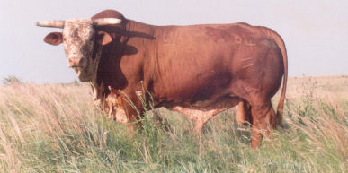
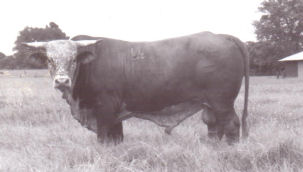

Texas Ranching Conservancy

Minimum selection standards for
range bull replacements
- Born naturally, without any help

- Out of a cow that has been a regular breeder beginning around her first birthday
- Out of a cow with a good to excellent udder
- Good to excellent on the basis of WEIGHT and VISUAL APPEARANCE when evaluated at the end of yearling range bull test
- Optimum frame score, reflective of a bull that can sire herd replacements best adapted to the rancher's particular ranching environment

|